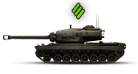
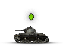
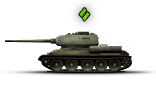
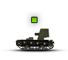
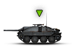

Heavy tanks
Heavy tanks, marked with the diamond and 3 bars, are used to absorb damage and lead the charge.
Light tanks
Light tanks, marked with the diamond are used to spot the enemy and help mop up.
Medium tanks
Medium Tanks, marked with the diamond and 2 bars, are used for dealing damage, supporting allies, and flanking the enemy.
Self-propelled gun
Self-propelled guns (SPG), marked with the square, are a support tank. They use inderect fire to stun and damage tanks from a long range.
Tank destroyers
Tank destoryers, marked with the triangle, are mounted with high penetration guns. This makes, along with a better cammo ratting, make them useful at taking out heavy tanks.
Premium tanks
Premium tanks are a special tank that you can get with real money. They come with everything researched, earn extra credites, and can work as crew trainers.